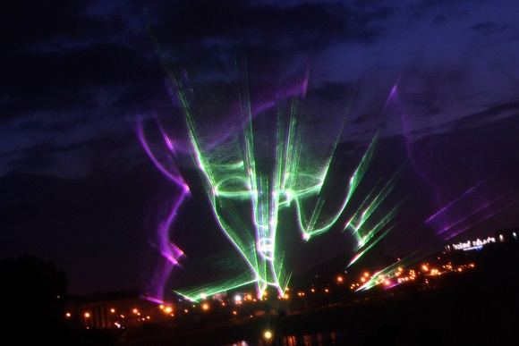

Welcome to fejerverkai
Fejerverkai | Bombike.lt
2020.10.29 11:02Skip to content +370 64677510 (Panevėžys, siuntos) +370 60188280 (Kaunas) +370 60016691 (Šiauliai) Mūsų parduotuvės Kontaktai Tinklaraštis Lietuvių Lietuvių Eesti English +370 64677510 (Panevėžys, siuntos) Menu 0,00 €
Krepšelyje nėra produktų.
Krepšelis
Krepšelyje nėra produktų.
Fejerverkai Visos baterijos 2 kategorijos baterijos 3 kategorijos baterijos Profesionalūs fejerverkai Spalvoti dūmai Kita pirotechnika Petardos Profesionalūs efektai Raketos Romėniškos lazdos Šaltosios ugnelės, fontanai Balionai Girliandos Foliniai Guminiai balionai Balionai su heliu Dekoracijos iš balionų Skaičiai Juostelės Atributika Gintaro dulkės Dangaus žibintai Konfeti Dekoracijos Muilo burbulai Pramogos Tiras Zip-line Laipiojimo siena Dėžių bokštas Nuoma El. paštas +370 64677510 Pradžia Fejerverkai FiltruotiRodoma 1–12 iš 164
Kategorijos Balionai (209) Balionai su heliu (1) Dekoracijos iš balionų (16) Foliniai balionai (123) Guminiai balionai (66) Juostelė (2) Fejerverkai (166) 2 kategorijos baterijos (50) 3 kategorijos baterijos (141) Profesionalūs fejerverkai (6) Profesionalūs efektai (3) Spalvoti dūmai (22) Petardos (14) Romėniškos lazdos (5) Raketos (12) 3 kategorijos raketos (9) 2 kategorijos raketos (3) Šaltosios ugnelės, fontanai (16) Muilo burbulai (6) Dovanų pakavimui (1) Dekoras (1) Skaičiai (9) Šventinė atributika (179) Kalėdinė atributika (16) Stalo dekoracijos - smeigtukai (24) Dangaus žibintai (1) Dekoracijos (131) Gintaro dulkės (2) Konfeti (6) Užsisakykite internetu geriausios kokybės ir geriausios kainos fejerverkus, petardas, fontantus, raketas.
Pristatymas per 5 darbo dienas.
Padarykite savo šventę įsimintiną nusipirkę įspūdingą fejerverką!
Turime įvairiausių rūšių, efektų, dydžių fejerverkų ir viską kurjeris Jums pristatys tiesiai į namus!
Fejerverkai
Fejerverkas GW218-94 „World Peace“
14,99 € 4,99 € Į krepšelį -67% Pridėti į norimų produktų sąrašąFejerverkai
Fejerverkas GW218-93 „Colorful World“
14,99 € 4,99 € Į krepšelį -67% Pridėti į norimų produktų sąrašąFejerverkai
Fejerverkas GP497/2 „We are the Night“
18,00 € 5,99 € Į krepšelį -60% Pridėti į norimų produktų sąrašąFejerverkai
Fejerverkas GP497 „Starlight“
15,00 € 5,99 € Į krepšelį -68% Pridėti į norimų produktų sąrašą IšparduotaFejerverkai
Fejerverkas GP485/2 „Fine View“
22,00 € 6,99 € Daugiau -69% Pridėti į norimų produktų sąrašąFejerverkai
Fejerverkas GP485 „Kaleidoscope“
22,50 € 6,99 € Į krepšelį -67% Pridėti į norimų produktų sąrašą IšparduotaFejerverkai
Fejerverkas GW218-77 „Classic Forever violetinė“
21,00 € 7,00 € Daugiau -67% Pridėti į norimų produktų sąrašąFejerverkai
Fejerverkas GW218-75 „Classic Forever žalia“
21,00 € 7,00 € Į krepšelį -67% Pridėti į norimų produktų sąrašąFejerverkai
Fejerverkas GW218-76 „Classic Forever mėlyna“
21,00 € 7,00 € Į krepšelį -64% Pridėti į norimų produktų sąrašąFejerverkai
Fejerverkas GP459 „Color Crackling“
22,00 € 7,99 € Į krepšelį -64% Pridėti į norimų produktų sąrašą IšparduotaFejerverkai
Fejerverkas GP493 „Word“
22,00 € 7,99 € Daugiau -67% Pridėti į norimų produktų sąrašąFejerverkai
Fejerverkas GP498 „Dream“
27,00 € 9,00 € Į krepšelį 1 2 3 4 … 12 13 14 Naujausios Balta staltiesė 2,50 € Rausva staltiesė 2,50 € Melsva staltiesė 2,50 € Auksinė staltiesė 5,50 € Perkamiausios Sprogalai „Flash Banger I“ 0,90 € 0,50 € Spalvoti dūmai „Smoking fountain” 2,00 € Spalvoti dūmai „RDG1“ 6,00 € 5,00 € Petardos „Micro DUMBUM” 0,79 € Siūloma ,,Hocus pocus" keksiukų formelės 2,80 € Guminių balionų pakuotė ,,He or She?" 13,00 € Folinis balionas ,,Trolė" 4,50 € Lazda R5808D ,,Dum Bum" 6,00 € Informacija Licencijos ir kiti leidimai Kontaktai Fejerverkų naudojimo taisyklės Informacija apie balionus Pirkėjui Privatumo politika Pirkimo sąlygos ir taisyklės Prekių grąžinimas Mūsų parduotuvės Apie mus Esame daugiametę patirtį turintys pirotechnikos ekspertai ir visada stengiamės pasiūlyti tik kokybiškiausius ir geriausius gaminius už bene mažiausią kainą rinkoje. Prekes pristatome visoje Lietuvoje ir Latvijoje. Tinklaraštis 04Bal NEPAMIRŠTAMAI ŠVENTEI – spalvingi fejerverkai Komentarai įrašui NEPAMIRŠTAMAI ŠVENTEI – spalvingi fejerverkai yra išjungti 10
Kov Fotosienelės iš balionų Komentarai įrašui Fotosienelės iš balionų yra išjungti 01
Spa Balionų dekoravimas 2019-10-01 Komentarai įrašui Balionų dekoravimas 2019-10-01 yra išjungti 25
Rgs Trumpa informacija apie balionus Komentarai įrašui Trumpa informacija apie balionus yra išjungti Mūsų parduotuvės Kontaktai Tinklaraštis Visos teisės saugomos. Draudžiama kopijuoti be leidimo. 2020 © Bombikė.lt Lietuvių Lietuvių Eesti English Fejerverkai Visos baterijos 2 kategorijos baterijos 3 kategorijos baterijos Profesionalūs fejerverkai Spalvoti dūmai Kita pirotechnika Petardos Profesionalūs efektai Raketos Romėniškos lazdos Šaltosios ugnelės, fontanai Balionai Girliandos Foliniai Guminiai balionai Balionai su heliu Dekoracijos iš balionų Skaičiai Juostelės Atributika Gintaro dulkės Dangaus žibintai Konfeti Dekoracijos Muilo burbulai Pramogos Tiras Zip-line Laipiojimo siena Dėžių bokštas Nuoma +370 60016691 (Šiauliai) +370 60188280 (Kaunas)
Prisijungti
Registruotis
Mes naudojame slapukus (angl. cookies), siekdami užtikrinti geriausią įmanomą tinklapio naudojimą vartotojui. Naudodamiesi šiuo tinklapiu, taip pat ir patekę iš kito tinklapio, Jūs sutinkate su slapukų naudojimu. Gerai Daugiau informacijos